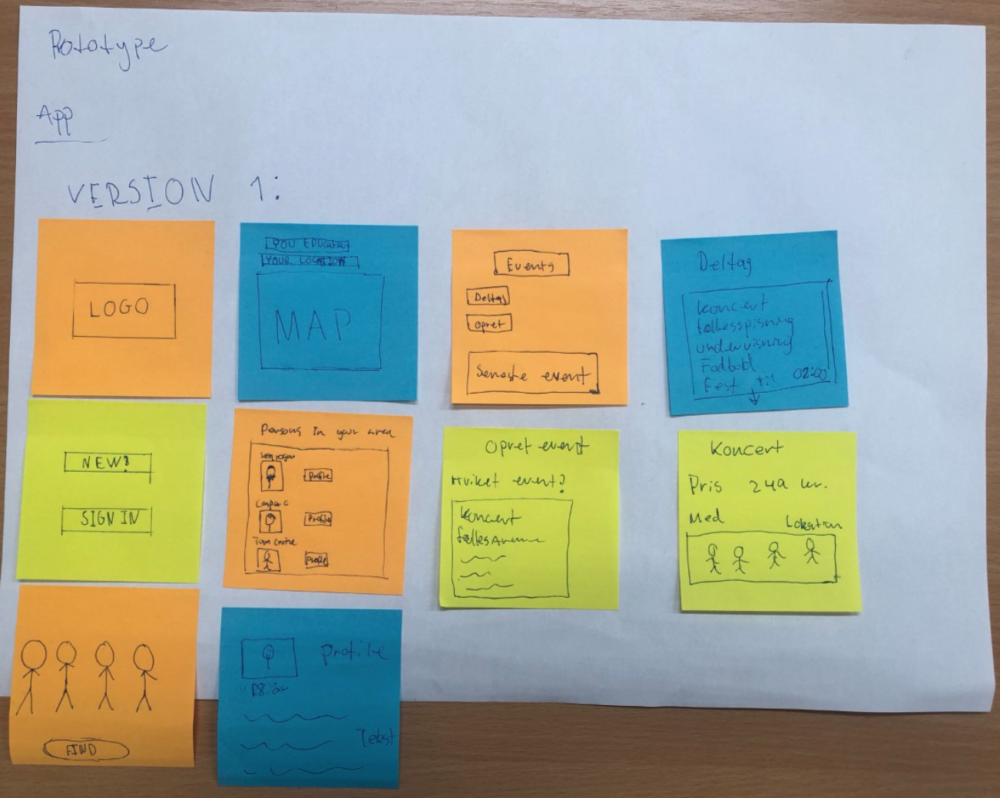
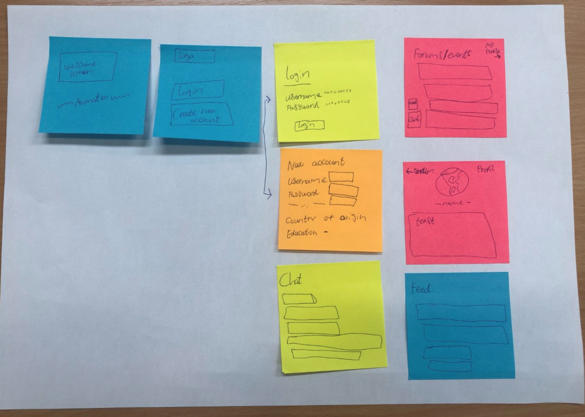
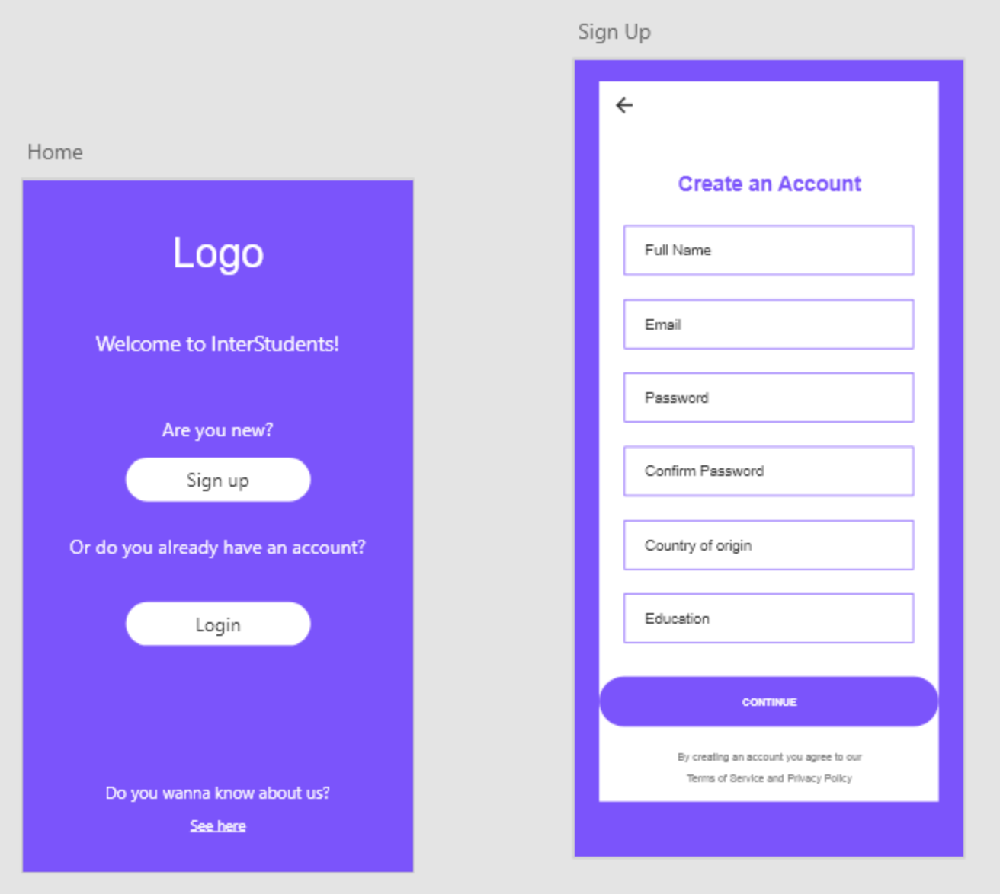
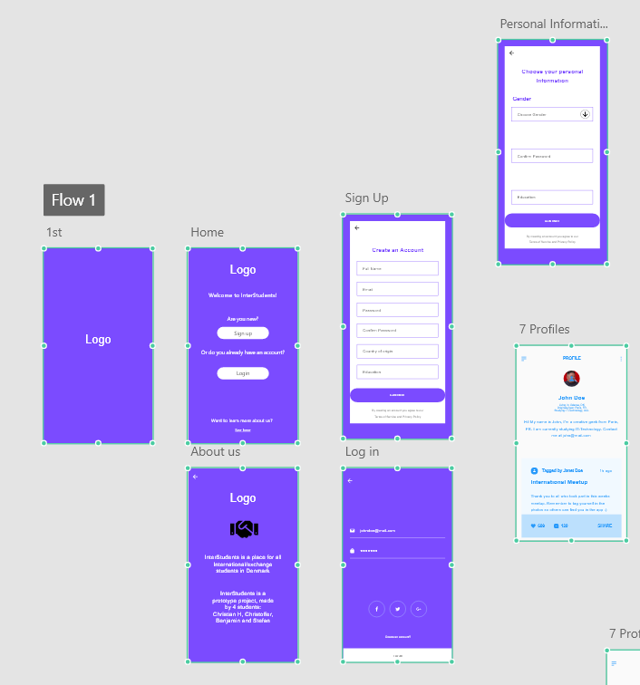

Christoffer Grønlund Svendsen
Prototype Workshop
Opgave
I vores workshop om prototyping, har vi fået til opgave at lave en dating-app. Målgrupperne man kan vælge imellem er 1. Børn 2. Hunde. 3. Unge mennesker (18-25 år). 4. ældre mennesker (+70 år). Opgaven er at gennemløbe 3 iterationer, hvor vi efter hver iteration skal teste appen og derefter have feedback fra en vilkårlig person.
Værktøjer
- - Adobe XD
- - Papir
- - Postisnotes
Processen
Som første del af vores Workshop, valgte vi at brainstorme idéer på hvilken målgruppe vi skulle bruge og hvilken slags app det skulle være. Nogle af de ideer vi kom med var en frokostmøde-app, en hundelufter-app, en håndværker dating-app og en app for udvekslingsstuderende/international studerende. Efter vi havde snakket fordele og ulemper ved de forskellige apps, valgte vi at gå med en app for udvekslingsstuderende/international studerende.
Vores idé er at lave en app til udvekslingsstuderende/international studerende og danske studerende. Appen har til formål at skabe sociale møder mellem internationale studerende og danske unge. Dette kan både være for at mødes til en øl, for dem der gerne vil have mere hjælp til at lære dansk eller for dem der vil mødes til arrangementer, såsom koncerter, brætspilsaftener eller sprogcafé. Appen skal man møde på fx skoler, kollegier eller andre institutioner.
Som første del af Prototype Workshop har vi lavet 2 papir prototyper, som skal forstille appen. Det er en sketch af hvordan appen kan komme til at se ud og hvilke funktioner den skal have. Man kan for eksempel se at der skal være sign up og login feed, et event feed og en profil side.
 På billedet nedenfor kan man se vores første iteration af vores app. Her fik vi lavet vores første prototype på Adobe XD. På den første prototype lavede vi et Home og Sign up feed, herfra fik vi første feedback på vores idé og vores første prototype. Feedbacken vi fik, var ting vi kunne lave i appen, det var fx profilside, event menu, aktivitets feed og en om os menu.
Billedet nedenfor er vores anden iteration af vores app. Her kan man se anden version af vores prototype i Adobe XD. Vi brugte den feedback vi fik tilbage til at tilføje flere artboards, som kunne tydeliggøre lidt mere hvad appen handler om. Da vi var færdige med tilføjelserne, fik vi testet appen på 3 forskellige personer, heriblandt en udvekslingsstuderende. Vi fik af vide i vores feedback, at appen var brugervenlig, simpel, der var behagelige farver og god navigation. Det vi kunne gøre bedre var formålet med appen, det skulle være mere klart, der skulle mere kontrast og det skulle generelt være en mere gennemarbejdet prototype.
Tredje og sidste prototype er baseret på bruger-test-resultater. I vores sidste prototype har vi færdiggjort appen, så den nu har de funktioner og den brugerflade som vores brugertest har givet os af resultater. Vi endte ud i at kalde appen InterStudents og man kan se det færdiggjorte resultat her.
Reflektion
I dette projekt lærte vi at lave en app i programmet Adobe XD. Vi lærte processen bag at lave en prototype af en app, hvilket var lærerigt og spændende.